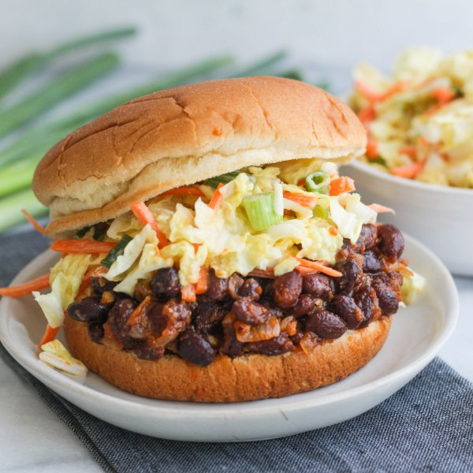

BBQ Black Bean Sandwich with Creamy Vegan Slaw

Prep Time
35 min
Nutrition (per serving)
613.1 kcalCalories
16 gProtein
70.6 gCarbs
31.9 gFat
Full nutrition table
| Calories | 613.1 kcal |
| Total fat | 31.9 g |
| Saturated fat | 3.9 g |
| Trans fat | 0.4 g |
| Cholesterol | 16.5 mg |
| Sodium | 936.9 mg |
| Carbohydrates | 70.6 g |
| Fiber | 14.7 g |
| Sugars | 27.4 g |
| Protein | 16 g |
| Potassium | 1241.4 mg |
| Calcium | 322 mg |
| Iron | 4.5 mg |
| Vitamin A | 1209.9 IU |
| Vitamin C | 68.5 mg |
| Vitamin D | 0 IU |
Cookware
Ingredients
- 1 (15 oz) canblack beans
- 2 mediumcarrots
- 4 clovesgarlic
- 1 small bunchgreen onions (scallions)
- 1 medium headnapa cabbage
- 4whole grain buns or rolls
- 1 mediumyellow onion
- apple cider vinegar
- brown sugar
- Dijon mustard
- extra virgin olive oil
- garlic powder
- ketchup
- onion powder
- paprika
- pure maple syrup
- salt
- soy sauce
- vegan mayonnaise
Steps
- Peel and mince the onion.1 medium yellow onion
- Preheat a medium saucepan over medium heat.
- Peel and mince the garlic.4 cloves garlic
- Once the saucepan is hot, add oil and swirl to coat the bottom.2 tbsp extra virgin olive oil
- Add the onion and garlic to the saucepan; cook, stirring frequently, until slightly softened, 4-5 minutes.
- Drain and rinse the beans in a colander; add to the saucepan with the onion. Stir to combine.1 (15 oz) can black beans
- Add the ketchup, vinegar, soy sauce, Dijon, brown sugar, and spices to the saucepan. Reduce heat to low and simmer, stirring occasionally, while you make the slaw.½ cup ketchup
3 tbsp apple cider vinegar
1 tbsp soy sauce
1 tsp Dijon mustard
2 tbsp brown sugar
½ tsp paprika
½ tsp garlic powder
¼ tsp salt - In a large bowl, whisk together the mayonnaise, vinegar, Dijon, maple syrup, and onion powder. Set aside.½ cup vegan mayonnaise
2 tbsp apple cider vinegar
1 tbsp Dijon mustard
1 tbsp pure maple syrup
1 tsp onion powder - Wash and dry the fresh produce.1 medium head napa cabbage
2 medium carrots
1 small bunch green onions (scallions) - Trim off and discard the root end of the cabbage; halve the cabbage lengthwise, then thinly slice crosswise and add to the bowl with the dressing.
- Trim and peel the carrots, then julienne or coarsely grate them. Add to the bowl with the cabbage.
- Trim off and discard the ends of the green onions; cut the onions into ¼-inch pieces and add to the bowl with the cabbage. Stir to combine the veggies with the dressing and set aside.
- Toast the buns if desired.4 whole grain buns or rolls
- To serve, place the bottom half of a bun on each plate. Top with bean mixture and some of the slaw; close with top half of the bun. Serve with remaining slaw on the side. Enjoy!